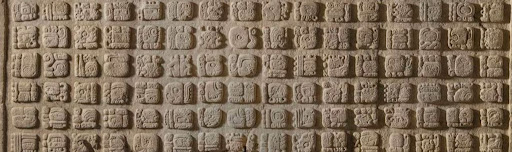

How
How does the Mayan writing system work? The ancient Maya writing system is complicated. It is logo syllabic, meaning that some of the signs are logograms and others are syllabograms.These word signs and syllable signs were then combined to spell words. The signs were mostly arranged in square or rectangular blocks and these blocks were in turn arranged into double columns that were read from left to right and top to bottom. Overall there are over 1,000 different Maya signs – but luckily for the scribes, ‘only’ 300 to 500 of those were used at any point in time.
